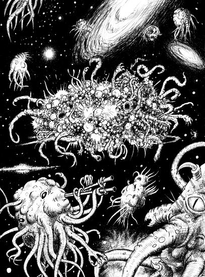

Azathoth
-- By H. P. Lovecraft

When age fell upon the world, and wonder went out of the minds of men; when grey cities reared to smoky skies tall towers grim and ugly, in whose shadow none might dream of the sun or of spring’s flowering meads; when learning stripped earth of her mantle of beauty, and poets sang no more save of twisted phantoms seen with bleared and inward-looking eyes; when these things had come to pass, and childish hopes had gone away forever, there was a man who travelled out of life on a quest into the spaces whither the world’s dreams had fled.
Of the name and abode of this man but little is written, for they were of the waking world only; yet it is said that both were obscure. It is enough to know that he dwelt in a city of high walls where sterile twilight reigned, and that he toiled all day among shadow and turmoil, coming home at evening to a room whose one window opened not on the fields and groves but on a dim court where other windows stared in dull despair. From that casement one might see only walls and windows, except sometimes when one leaned far out and peered aloft at the small stars that passed. And because mere walls and windows must soon drive to madness a man who dreams and reads much, the dweller in that room used night after night to lean out and peer aloft to glimpse some fragment of things beyond the waking world and the greyness of tall cities. After years he began to call the slow-sailing stars by name, and to follow them in fancy when they glided regretfully out of sight; till at length his vision opened to many secret vistas whose existence no common eye suspects. And one night a mighty gulf was bridged, and the dream-haunted skies swelled down to the lonely watcher’s window to merge with the close air of his room and make him a part of their fabulous wonder.
There came to that room wild streams of violet midnight glittering with dust of gold; vortices of dust and fire, swirling out of the ultimate spaces and heavy with perfumes from beyond the worlds. Opiate oceans poured there, litten by suns that the eye may never behold and having in their whirlpools strange dolphins and sea-nymphs of unrememberable deeps. Noiseless infinity eddied around the dreamer and wafted him away without even touching the body that leaned stiffly from the lonely window; and for days not counted in men’s calendars the tides of far spheres bare him gently to join the dreams for which he longed; the dreams that men have lost. And in the course of many cycles they tenderly left him sleeping on a green sunrise shore; a green shore fragrant with lotus-blossoms and starred by red camalotes.